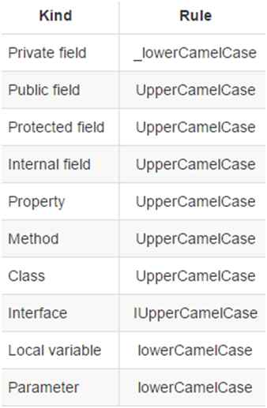

Coding Style
This section will discuss the naming convention of code, files, github branches, etc. If you find any files with inconsistent naming, please fix them accordingly.
C# Naming Conventions
Because Unity uses C# as its preferred language, the standard C# naming conventions will be used within this project.

This scheme will apply to C# script names as well.
For further details regarding C# coding conventions, please refer to the following documents:
- https://docs.microsoft.com/en-us/dotnet/csharp/programming-guide/inside-a-program/coding-conventions
- https://docs.microsoft.com/en-us/dotnet/standard/design-guidelines/general-naming-conventions
- https://docs.microsoft.com/en-us/dotnet/standard/design-guidelines/interface
- https://docs.microsoft.com/en-us/dotnet/standard/design-guidelines/names-of-classes-structs-and-interfaces
- https://blog.submain.com/c-interface-definition-examples/
- https://www.c-sharpcorner.com/article/types-of-relationships-in-object-oriented-programming-oops/
Everything else will mostly be kept consistent with Unity/C# conventions, but for this project, we will not be having the m_ prefix for component variables in Unity.
Namespaces
All C# scripts that are inside the Assets/Scripts folder must have a namespace to it.
The namespace should be CatchIo.<folder name>, where the <folder name> is replaced with the folder that the script is in.
Unity Asset Names
Every asset used within the Unity engine will use the Upper Camel Case (ex: MainCharacter.prefab or GrassLandTileSet.png).
These assets include everything from tile maps, sprites, object prefabs, shaders, etc.
Scene names should be in Camel Case as well as items within the scenes too.
It's discouraged to use spaces for game object names, but not mandatory as there are some generated objects that does include a space in the name (ex: Main Camera).
Style Rules
This project uses EditorConfig to maintain its code style.
Some style rules have been disabled due to compatibility with how Unity handles C# scripts.
These settings will be automatically read by Visual Studio.
For developers using VS Code, we have stored a pre-configured workspace settings and recommended extensions in the .vscode folder for easy configuration.
The repository for this project will check for the code style via dotnet-format for every PR.
This check must pass in order for new code to be merged to the main branch.
Formatting Code
Although both VS Code and Visual Studio offers a built-in code cleaner that can be triggered for every save, we found that there are some style rules won't apply with this method. So we recommend using the development version of dotnet-format tool.
You can install this tool by using this following command from your terminal:
dotnet tool install -g dotnet-format --version 5.0.142902 --add-source https://pkgs.dev.azure.com/dnceng/public/_packaging/dotnet-tools/nuget/v3/index.json
To format the entire script folder, you will have to first open a script in Unity with Visual Studio so that Unity engine can generate the .csproj file.
Once that is done, use the following command from the root of this project folder:
dotnet-format Catch.io.sln --fix-style warn
If the above command doesn't work due to this error or multiple build files, you can use the following command to fix at least the white spaces.
dotnet format whitespace --folder --verbosity